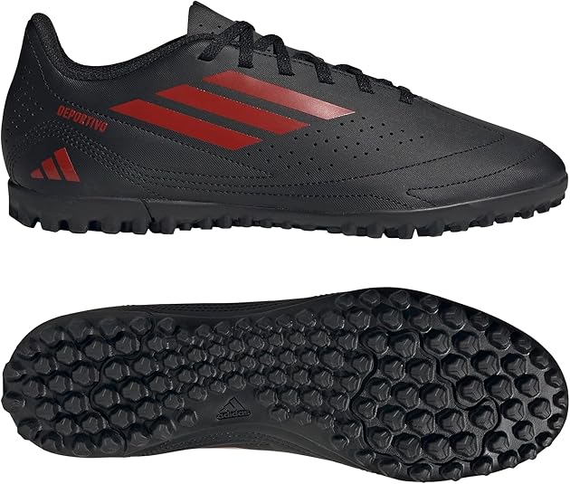
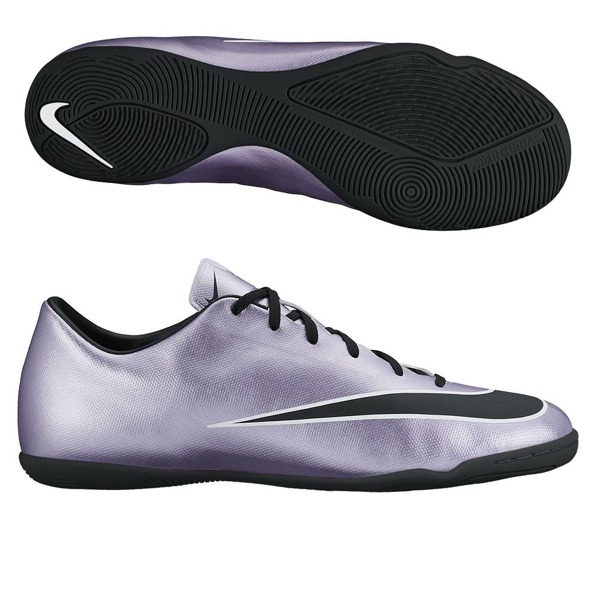
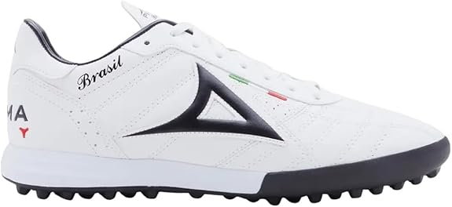

- Adidas Calzado de Fútbol Goletto IX Turf Boots Unisex-Adulto
- Talla 27cm
- Material de la suela:Sintético
- Material exterior:Sintético
- Nivel de resistencia al agua:No resistente al agua
- País de origen:Camboya

- Zapatos de Fútbol para Hombre Profesionales
- Material de la suela:Caucho
- Material exterior:Sintéticas
- Material interno:Acolchado suave y material transpirable
- Tipo de cierre:Cordones
- País de origen:China

- adidas Zapatos P5 Unisex-Adulto
- Material de la suela:Sintético
- Material exterior:Sintético
- Exterior sintético suave
- El 25% de los componentes utilizados para fabricar el exterior están hechos con al menos un 50% de contenido reciclado
- País de origen:Myanmar

- Tipo de tejido:Sintéticos
- Tamaño: 10 pulgadas
- Tipo de suelo sugerido: suelo de pelo corto y abrigo de pies
- Tipo de cierre:Sin cierre
- Nivel de resistencia al agua:No resistente al agua
- Fabricadas en Vietnam

- Nike Nike Phantom Gx 2 Club Zapatillas para Adulto
- Material de la suela:Caucho
- Plantilla acolchada
- Altura de eje:Alla caviglia
- Material exterior:Cuero sintético
- Fabricante:Nike

- Pirma Tenis Brasil 503 Hombre Turf
- Tipo de cierre:Cordones
- Nivel de resistencia al agua:No resistente al agua
- Corte sintético resistente
- Ideal para entranamientos y partidos frecuentes
- País de origen:México